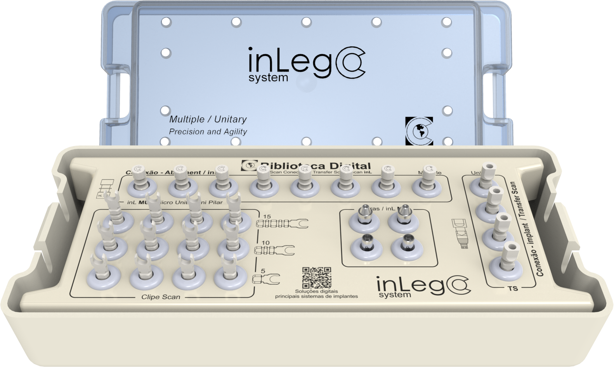

O fim do caos no escaneamento mandibular: referências em PEEK de Grau Médico para próteses de arco total (protocolos).

Sistema de escaneamento intraoral para pacientes edêntulos (sem dentes) que receberão próteses de arco total (protocolos)
Hastes horizontais brancas fabricadas em PEEK de Grau Médico
Criam referências geométricas precisas para o escâner
O escâner lê o branco como dente natural: Ciência da Continuidade
Resolve o maior gargalo da implantodontia digital: o escaneamento da mandíbula
o escâner se perde e confunde a ordem dos escambores
Elimina a "confusão digital" com fluxo de trabalho contínuo e livre de distorções
Assegura o assentamento passivo da barra protética, evitando tensões e fraturas de parafusos
Ciência da Continuidade: o escâner lê o PEEK branco como dente natural e entende a sequência lógica do arco, sem interrupções
ideal para pacientes com abertura bucal limitada, onde chaves longas não entram
Hastes Duplas Exclusivas: duas hastes simultâneas por pilar, capturando as áreas posteriores
Escaneamento em Etapa Única: gengiva e componente de uma só vez, metade do tempo de cadeira
Kit inLego: escaneamento mandibular rápido, preciso e sem improviso, com assentamento passivo protegendo o resultado final do paciente.